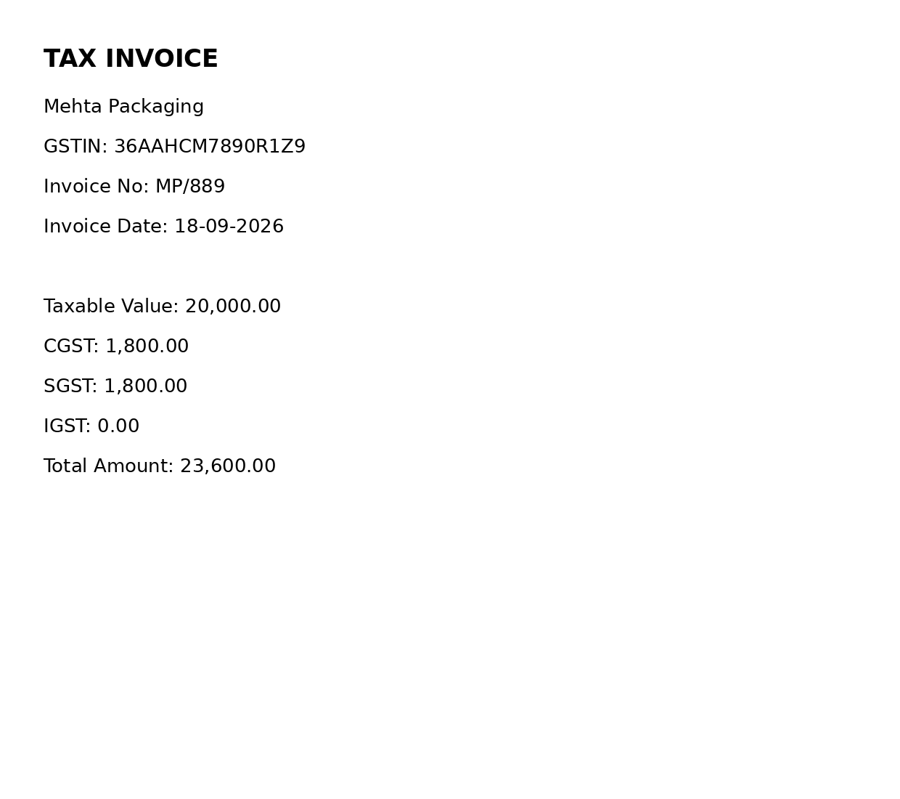

What it does
- Free local OCR (Tesseract). Pulls invoice number, date, tax ID, amounts and total.
- Checks the tax ID checksum and that the tax adds up to the total.
- Anything below 0.85 confidence goes to a review queue, so a person checks only the flagged ones.
- Clean invoices become a balanced purchase journal and an Excel register.
- Limit: tuned to labelled layouts today; free-form layouts need an extra AI step.
Checked
13 automated tests pass, plus a demo on 4 sample invoices. Tests last run 23 Oct 2026 on demo data.

Price: a fixed price, quoted after a free sample.
Email me for a free sample hemanthrajaworking@gmail.com
Email me for a free sample hemanthrajaworking@gmail.com